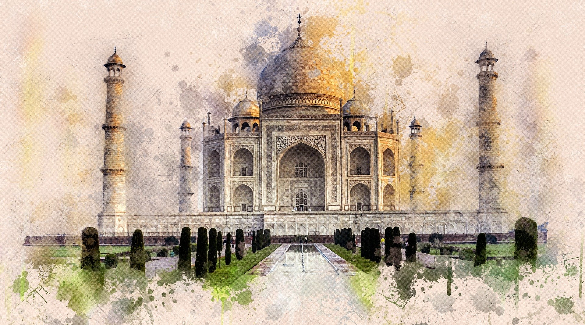

Geography
Asia is a landmass variously described as part of Eurasia or as
Earth's largest and most populous continent in its own right, located primarily in the Eastern and
Northern
Hemispheres. It shares the continental landmass of Eurasia with the continent of Europe and the
continental
landmass of Afro-Eurasia with both Europe and Africa. Asia covers an area of 44,579,000 square
kilometres
(17,212,000 sq mi), about 30% of Earth's total land area and 8.7% of the Earth's total surface area.
The
continent, which has long been home to the majority of the human population, was the site of many of
the
first civilizations. Its 4.5 billion people (as of June 2019) constitute roughly 60% of the world's
population.
In general terms, Asia is bounded on the east by the Pacific Ocean, on the south by the Indian
Ocean, and on
the north by the Arctic Ocean. The border of Asia with Europe is a historical and cultural
construct, as
there is no clear physical and geographical separation between them. It is somewhat arbitrary and
has moved
since its first conception in classical antiquity. The division of Eurasia into two continents
reflects
East–West cultural, linguistic, and ethnic differences, some of which vary on a spectrum rather than
with a
sharp dividing line. The most commonly accepted boundaries place Asia to the east of the Suez Canal
separating it from Africa; and to the east of the Turkish Straits, the Ural Mountains and Ural
River, and to
the south of the Caucasus Mountains and the Caspian and Black Seas, separating it from Europe.
China and India alternated in being the largest economies in the world from 1 to 1800 CE. China was
a major
economic power and attracted many to the east, and for many the legendary wealth and prosperity
of the ancient culture of India personified Asia, attracting European commerce, exploration and
colonialism. The accidental discovery of a trans-Atlantic route from Europe to America by Columbus
while in
search for a route to India demonstrates this deep fascination. The Silk Road became the main
east–west
trading route in the Asian hinterlands while the Straits of Malacca stood as a major sea route. Asia
has
exhibited economic dynamism (particularly East Asia) as well as robust population growth during the
20th
century, but overall population growth has since fallen. Asia was the birthplace of most of the
world's
mainstream religions including Hinduism, Zoroastrianism, Judaism, Jainism, Buddhism, Confucianism,
Taoism,
Christianity, Islam, Sikhism, as well as many other religions.
Given its size and diversity, the concept of Asia—a name dating back to classical antiquity—may
actually
have more to do with human geography than physical geography. Asia varies greatly across
and within its regions with regard to ethnic groups, cultures, environments, economics, historical
ties and
government systems. It also has a mix of many different climates ranging from the equatorial south
via the
hot desert in the Middle East, temperate areas in the east and the continental centre to vast
subarctic and
polar areas in Siberia.
History
The history of Asia can be seen as the distinct histories of several peripheral coastal regions:
East Asia,
South Asia, Southeast Asia and the Middle East, linked by the interior mass of the Central Asian
steppes.
The coastal periphery was home to some of the world's earliest known civilizations, each of them
developing
around fertile river valleys. The civilizations in Mesopotamia, the Indus Valley and the Yellow
River shared
many similarities. These civilizations may well have exchanged technologies and ideas such as
mathematics
and the wheel. Other innovations, such as writing, seem to have been developed individually in each
area.
Cities, states and empires developed in these lowlands.
The central steppe region had long been inhabited by horse-mounted nomads who could reach all areas
of Asia
from the steppes. The earliest postulated expansion out of the steppe is that of the Indo-Europeans,
who
spread their languages into the Middle East, South Asia, and the borders of China, where the
Tocharians
resided. The northernmost part of Asia, including much of Siberia, was largely inaccessible to the
steppe
nomads, owing to the dense forests, climate and tundra. These areas remained very sparsely
populated.
The center and the peripheries were mostly kept separated by mountains and deserts. The Caucasus and
Himalaya mountains and the Karakum and Gobi deserts formed barriers that the steppe horsemen could
cross
only with difficulty. While the urban city dwellers were more advanced technologically and socially,
in many
cases they could do little in a military aspect to defend against the mounted hordes of the steppe.
However,
the lowlands did not have enough open grasslands to support a large horsebound force; for this and
other
reasons, the nomads who conquered states in China, India, and the Middle East often found themselves
adapting to the local, more affluent societies.
The Islamic Caliphate's defeats of the Byzantine and Persian empires led to West Asia and southern
parts of
Central Asia and western parts of South Asia under its control during its conquests of the 7th
century. The
Mongol Empire conquered a large part of Asia in the 13th century, an area extending from China to
Europe.
Before the Mongol invasion, Song dynasty reportedly had approximately 120 million citizens; the 1300
census
which followed the invasion reported roughly 60 million people.
The Black Death, one of the most devastating pandemics in human history, is thought to have
originated in
the arid plains of central Asia, where it then travelled along the Silk Road.
The Russian Empire began to expand into Asia from the 17th century, and would eventually take
control of all
of Siberia and most of Central Asia by the end of the 19th century. The Ottoman Empire controlled
Anatolia,
most of the Middle East, North Africa and the Balkans from the mid 16th century onwards. In the 17th
century, the Manchu conquered China and established the Qing dynasty. The Islamic Mughal Empire and
the
Hindu Maratha Empire controlled much of India in the 16th and 18th centuries respectively. The
Empire of
Japan controlled most of East Asia and much of Southeast Asia, New Guinea and the Pacific islands
until the
end of World War II.
Climate
Asia has extremely diverse climate features. Climates range from arctic and subarctic in Siberia to
tropical
in southern India and Southeast Asia. It is moist across southeast sections, and dry across much of
the
interior. Some of the largest daily temperature ranges on Earth occur in western sections of Asia.
The
monsoon circulation dominates across southern and eastern sections, due to the presence of the
Himalayas
forcing the formation of a thermal low which draws in moisture during the summer. Southwestern
sections of
the continent are hot. Siberia is one of the coldest places in the Northern Hemisphere, and can act
as a
source of arctic air masses for North America. The most active place on Earth for tropical cyclone
activity
lies northeast of the Philippines and south of Japan.
A survey carried out in 2010 by global risk analysis farm Maplecroft identified 16 countries that
are
extremely vulnerable to climate change. Each nation's vulnerability was calculated using 42 socio,
economic
and environmental indicators, which identified the likely climate change impacts during the next 30
years.
The Asian countries of Bangladesh, India, the Philippines, Vietnam, Thailand, Pakistan, China and
Sri Lanka
were among the 16 countries facing extreme risk from climate change. Some shifts are already
occurring. For example, in tropical parts of India with a semi-arid climate, the temperature
increased by
0.4 °C between 1901 and 2003. A 2013 study by the International Crops Research Institute for the
Semi-Arid
Tropics (ICRISAT) aimed to find science-based, pro-poor approaches and techniques that would enable
Asia's
agricultural systems to cope with climate change, while benefitting poor and vulnerable farmers. The
study's
recommendations ranged from improving the use of climate information in local planning and
strengthening
weather-based agro-advisory services, to stimulating diversification of rural household incomes and
providing incentives to farmers to adopt natural resource conservation measures to enhance forest
cover,
replenish groundwater and use renewable energy.
The ten countries of the Association of Southeast Asian Nations (ASEAN) - Brunei, Cambodia,
Indonesia, Laos,
Malaysia, Myanmar, the Philippines, Singapore, Thailand, and Vietnam - are among the most vulnerable
to the
effects of climate change in the world, however, ASEAN's climate mitigation efforts are not
commensurate
with the climate threats and risks it faces.
Language
Asia is home to several language families and many language isolates. Most Asian countries have more
than
one language that is natively spoken. For instance, according to Ethnologue, more than 600 languages
are
spoken in Indonesia, more than 800 languages spoken in India, and more than 100 are spoken in the
Philippines. China has many languages and dialects in different provinces.
Facts
The average life span in Japan is 80.9 years
for men and 86.6 years for women.
The average life
expectancy for a
male in the U.S. is 76.4 years
(per 2015 UN data).
Top 3 countries with the highest IQ on average are Asian
Singapore, South Korea,
and Japan have the highest average IQ
on the planet. These are also
some
of
the
continent's strongest economies and
most prosperous nations in the world.
The word "Asia" is used as a female name
and means sunrise. After all, the
sun rises in the
east,
home
of
the
far East.